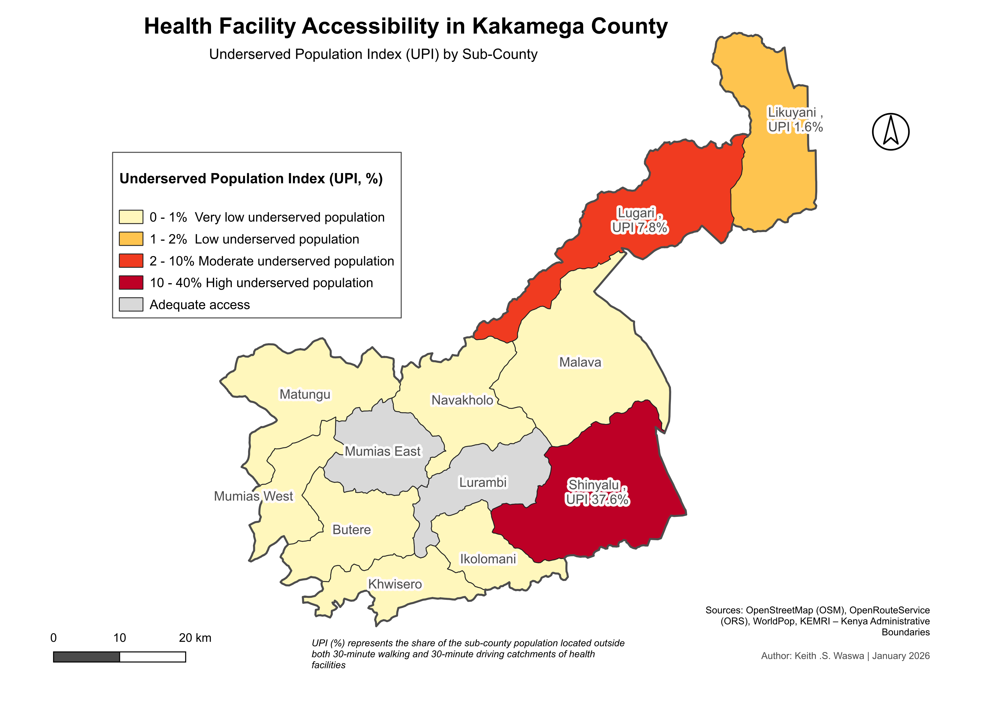
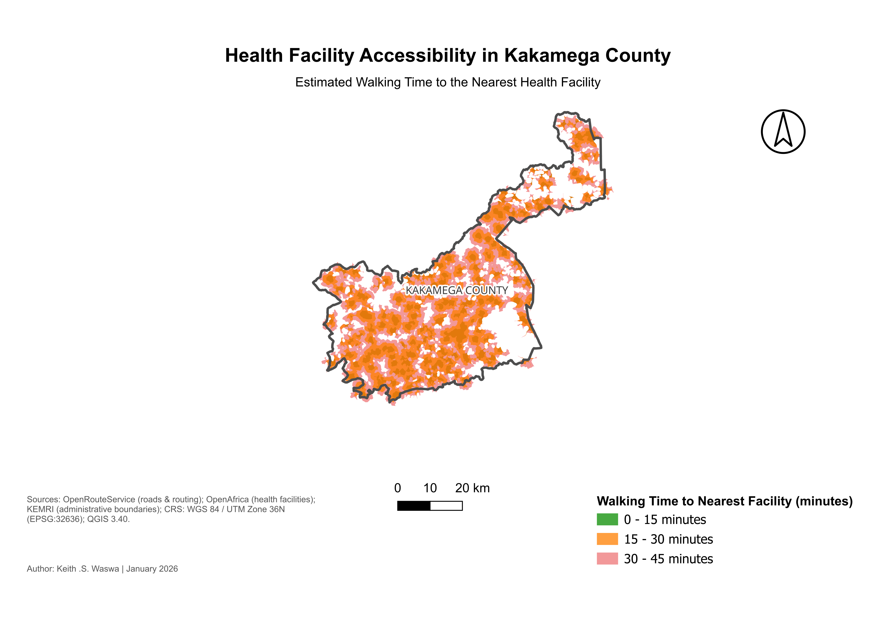
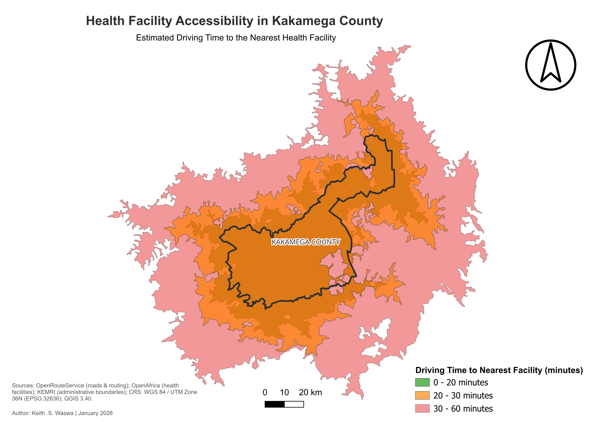

Health Facility Accessibility Analysis
This project analyzes spatial accessibility to health facilities in Kakamega County using GIS-based network analysis. The study evaluates travel time to the nearest health facility using both driving and walking scenarios and identifies underserved populations using the Underserved Population Index (UPI). The results highlight geographic inequalities in healthcare access and help identify priority areas for infrastructure development
Objective
To quantify inequality in healthcare access by modelling realistic travel time instead of straight‑line distance and identifying priority intervention zones. This is done by:
- Evaluating travel time to the nearest health facility across Kakamega County.
- Identifying areas with limited access to healthcare.
- Calculating the Underserved Population Index (UPI) at the sub-county level.
- Supporting decision-making for healthcare planning and resource allocation.
Study Area
Study area: Kakamega County, western Kenya

Data Sources
- Health facility locations – OpenAfrica
- Road network – OpenStreetMap (OSM)
- Population distribution – WorldPop
- Administrative boundaries – Kenya Medical Research Institute
- Routing services – OpenRouteService (ORS)
Tools and Software
- QGIS – GIS mapping, spatial analysis, and data visualization
- OpenRouteService – Routing and network analysis
- OpenStreetMap Data Processing – Extracting, cleaning, and analyzing OSM data for projects
- Raster‑vector overlay analysis
- Cartographic visualization
Methodology
- Health facility locations were obtained from OpenAfrica and validated for spatial accuracy.
- The OpenStreetMap road network was downloaded and cleaned to remove topology errors.
- The roads were assigned speeds by class and road network was used to perform network-based accessibility analysis using OpenRouteService.
- Isochrone generation for walking and driving scenarios:
Isochrones Service areas were generated to estimate driving time accessibility (0–20, 20–30, and 30–60 minutes) to the nearest health facility.
Walking accessibility isochrones Service areas were also created (0–15, 15–30, and 30–45 minutes) to simulate non-motorized travel. - Population distribution data from WorldPop was intersected with accessibility zones.
- The Underserved Population Index (UPI) was calculated to estimate the proportion of residents located outside both 30-minute driving and walking catchments
- Results were aggregated at the sub-county level to identify spatial disparities in healthcare accessibility
Underserved Population Index

This map shows the Underserved Population Index (UPI) across sub-counties in Kakamega County, highlighting areas where residents have limited access to health facilities. UPI represents the percentage of the population located outside both 30-minute walking and 30-minute driving catchments of health facilities. Higher values indicate greater gaps in healthcare accessibility. The analysis reveals clear spatial disparities. Shinyalu has the highest underserved population (37.6%), indicating significant accessibility challenges. Lugari also shows moderate gaps (7.8%). In contrast, sub-counties such as Likuyani demonstrate relatively low underserved population shares, suggesting better facility coverage. This map helps identify priority areas for improving healthcare access and guiding infrastructure planning.
Walking Accessibility

This map shows the estimated walking time to the nearest health facility across Kakamega County, highlighting spatial differences in physical access to healthcare services. Walking accessibility is classified into three travel-time zones: 0–15 minutes, 15–30 minutes, and 30–45 minutes. The analysis reveals that a large portion of the county falls within the 15–30 minute walking range, indicating moderate accessibility to health facilities. Areas within the 0–15 minute zone represent communities with relatively good proximity to healthcare services. However, pockets of 30–45 minute travel time appear in more remote locations, suggesting potential accessibility challenges for residents who rely on walking. This map provides insight into spatial patterns of healthcare access and helps identify areas where improving health facility distribution or transport infrastructure could enhance service accessibility. Large peripheral settlements exceed the 30‑minute threshold, showing that residents without motorized transport experience limited access to primary healthcare and potential emergency response delays.
Driving Accessibility

This map shows the estimated driving time to the nearest health facility across Kakamega County, illustrating spatial variations in healthcare accessibility based on road network travel time. Driving accessibility is categorized into 0–20 minutes, 20–30 minutes, and 30–60 minutes travel zones. The analysis indicates that much of the central part of the county falls within the 0–30 minute driving range, suggesting relatively good access to health facilities for residents with motorized transport. However, areas toward the county’s outer boundaries fall within the 30–60 minute range, highlighting locations where residents may experience longer travel times to reach healthcare services. This map complements the walking accessibility and UPI analysis by providing insight into how transportation improves healthcare access and where service gaps remain. Motorized travel improves coverage but isolated pockets remain beyond acceptable travel time due to sparse road connectivity and facility distribution.
Key Findings
- Urban centres have near‑complete service coverage
- Peripheral sub‑counties contain most underserved population
- Walking accessibility inequality is significantly higher than driving accessibility
- Road connectivity strongly influences healthcare access
Impact
Results support facility siting decisions, ambulance response planning, and rural infrastructure prioritization by highlighting where travel time limits equitable healthcare access.